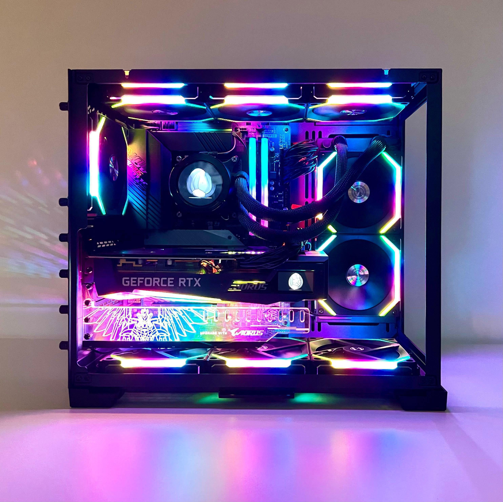

Introduction
Welcome to PC Requirements for gaming

Gaming on a computer can give players better graphics, smoother gameplay, and more control compared to consoles. However, not every computer is powerful enough to run modern games. Different games require different hardware specifications in order to run properly. This website explains the basic PC requirements needed for gaming. It will help beginners understand what hardware is needed to run popular games and what components are important in a gaming computer.